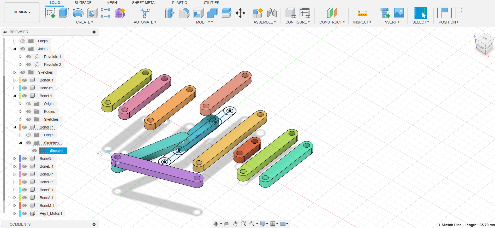
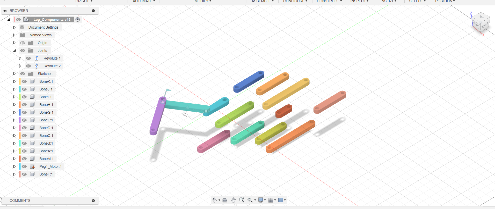

<div class="textcontainer">
<p class="margin"> </p>
<h3>Week 1: Final Project Proposal</h3>
<!--
<p class="margin"> </p>
<div class="flexrow">
<a id="btn" href="wk7.zip" download>Checkout my files from this week!
</a>
</div>
<p class="margin"> </p>
-->
<h4>Assignment: Minimum Viable Product for Final Project</h4>
<p class="margin"> </p>
<p>
I fell behind in developing the MVP for my Final Project, so I spent more of this week preparing my model and development plan. I pivoted my Final Project idea from what I first listed to developing a 3D printed version of a Strandbeest, building off of the kinetic sculpture from week two. I found a many fantastic tutorials online of other artists and designers that created their own 3D printed Strandbeests. So there was a certain amount of inspiration I could take from there. Otherwise, I am designing all parts of the Strandbeest directly.
</p>
<p>
I began by first compiling a list of what I needed to produce and which motors and components were necessary for the creation of the robot. I realized quickly that the amount of pieces that would need to be 3D printed was over 100. Given that figure is quite high, and the print time necessary for all these parts (even if I were to run jobs on multiple printers consecutively) would be hours and hours, amounting to potentially weeks of development time, which doesn't leave any margin for error should some of the parts be wrong.
</p>
<p class="margin">
<div class="flexrow">


<p>
Then after talking with Bobby and a few other students, I decided to move forward with a print in place option. I began by recreating bones of a single leg of a Strandbeest into individual components that would enable greater manipulation in Fusion. I did some research on different types of print-in-place configurations with 3D printing and ultimately landed on a hinge joint that snaps-to-fit. This type of joint has a whole on one leg, and a peg on the other that you snap together (screenshots below revealing the process). This will hopefully reduce the amount of print time necessary for all the parts. So I spent this weekend recreating all of these designs in Fusion and then assembling the leg to model it's configuration.
</p>
<h4>Creating the Print-in-Place Joint</h4>
<p class="margin"> </p>
<p>
I began to model in Fusion one of the Strandbeest legs from diagram that Theo Johnson based his original design. I did this in order to see which of the bones would need to have a peg attached and which of them would have a hole; the intention behind this is in order to have one 3d print happening per leg.
</p>
<iframe src="https://mygsd130.autodesk360.com/shares/public/SH512d4QTec90decfa6e45d8803846109111?mode=embed" width="640" height="480" allowfullscreen="true" webkitallowfullscreen="true" mozallowfullscreen="true" frameborder="0"></iframe>
<p>
My approach to creating the pegs was inspired by Azzan and included adding cylinders into the holes and extruding the two that protrude out of the side of one of the bones. Then I used a few different functions within Fusion, including the filler in order to curve the edges of the cylinder where it protruded so that it would sort of cap off the edge and create a snap to fit joint. I was able to create one of these and conjoined two bones.
</p>
<h4>Next Steps</h4>
<p>
I prepared a really simple 3d print and export the DX F file to do initial test on this prototype to see if the joint would actually fit. Below you can see a photo of the prints and it actually does work together although my utility of the bones revealed that the peg snaps in very tightly and there's too much friction in the movement so that I don't think that the legs would functionally move and walk on the ground.
I will expand or I will contract the size of the cylinder by two millimeters and do another test print. My immediate next steps are to do another test sprint of this individual joint to ensure that the snap to fit joint is successful at a smaller peg size. Then I will apply this peg to the rest of the bones and assemble the entire leg so that it can snap to place and then do a print of the whole leg
</p>
</div>
<p class="margin"> </p>
</div>